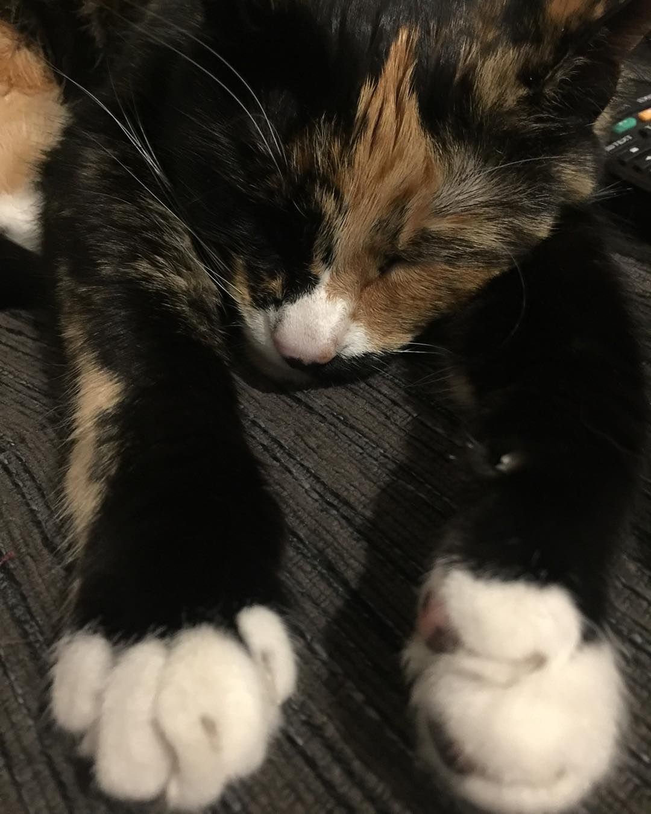

It is a little known fact that Jaeger is actually a dragon, rather than a cat. Her cat performance is very convincing, but a keen eye can spot the tell-tale signs. For example, she frequently snorts like a jagon and uses her tail to knocks things off surfaces or attack those around her. She also keeps treasures, which she moves around the house to various hiding places. Who else is known to keep treasures? Dragons, that's who. Sign up to receive your jagon treasures nao.
I'm currently completing a tutorial by Michael Hartl and he is using this section to talk about Learn Enough to Be Dangerous. Use your technical sophistication to find out that information on your own it shouldn't be difficult just click the link because we're here to talk about how my cat is secretly a dragon.
You may notice that on this website I refer to her as a jagon rather than a dragon. This is because we are intentionally pronouncing it incorrectly for comedic effect. I also enjoy how similar it is to her name when written. However, please note that jagon is pronounced with a soft G rather than a Y as in her Germanic name.
Below is a photo of Jaeger sleeping. Note her jagon-like qualities.

Dragons were previously thought to be mythical creatures, and have existed in folklore for centuries. Although they were previously thought to be magical creatures our experiences with Jaeger has led us to believe that they are just moody and eccentric, rather than actually magical.
Jaeger is a jagon who enjoys cuddles, naps, and cat food. Not straight away, though. She will ask for the food and then pretend she doesn't like it for a few minutes before eventually realising that's all she's getting. At which point she will happily eat almost the entire can. She is the werst.
